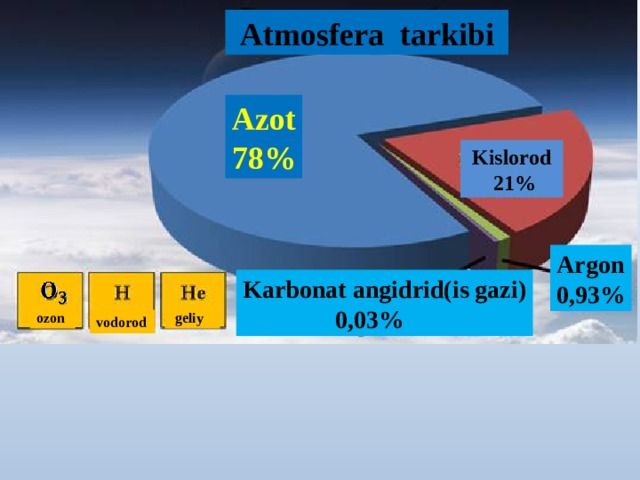

Atmosfera Tarkibi va Ifloslanishi
1.1. Atmosfera tarkibi va tuzilishi: Sayyoramizning himoya qalqoni
Atmosfera — Yer sayyorasini o'rab turgan, hayot mavjudligining asosiy sharti bo'lgan gazsimon qobiqdir. U tirik organizmlarni halokatli ultrabinafsha nurlanishdan, kosmik jismlarning zarbalaridan himoya qiladi va sayyoramizdagi issiqlik muvozanatini bir maromda saqlab turadi.
- Kimyoviy tarkibi: Yer yuzasiga yaqin qatlamlardagi quruq havo asosan azot (78.09%) va kislorod (20.94%) iborat. Qolgan qismini argon (0.93%), karbonat angidrid (0.03%) va juda kichik miqdordagi boshqa gazlar (neon, geliy, metan, ozon va boshqalar) tashkil etadi. Ushbu nozik muvozanatning buzilishi tirik organizmlarning nafas olish jarayonlariga jiddiy salbiy ta'sir ko'rsatadi.

- Vertikal tuzilishi: Atmosfera harorat va zichlikka qarab bir necha qatlamlarga bo'linadi:
- Troposfera (10-15 km gacha): Ob-havo hodisalari yuz beradigan asosiy qatlam.
- Stratosfera (50 km gacha): Hayot uchun muhim bo'lgan ozon (O₃) qatlami shu yerda joylashgan.
- Mezosfera (50-80 km gacha)
- Termosfera (Ionosfera) (80-700 km gacha)
- Egzosfera (700 km dan yuqori)
1.2. Atmosfera havosini ifloslovchi manbalar
- Tabiiy manbalar: Bularga vulqon otilishi, o'rmon yong'inlari, chang bo'ronlari, o'simlik va hayvon qoldiqlarining chirishi kiradi.
- Antropogen manbalar: Inson faoliyati natijasida yuzaga keladi va bugungi kunda ifloslanishning asosiy sababchisidir. Ular o'z navbatida statsionar va ko'chma manbalarga bo'linadi:
- Statsionar manbalar: Sanoat korxonalari, issiqlik elektr stansiyalari, isitish tizimlari, chiqindilarni yoqish pechlari.
- Ko'chma manbalar: Avtomobillar, poyezdlar, samolyotlar va kemalar.
- Boshqa manbalar: Qishloq xo'jaligi (o'g'itlar, chorvachilik), qurilish ishlari va erituvchilarning bug'lanishi.
1.3. Birlamchi va ikkilamchi ifloslantiruvchilar
- Birlamchi ifloslantiruvchilar: To'g'ridan-to'g'ri manbadan atmosferaga chiqariladi. Masalan, avtomobil chiqindisidan chiquvchi uglerod oksidi (CO) yoki zavod mo'risidan chiquvchi oltingugurt dioksidi (SO₂).
- Ikkilamchi ifloslantiruvchilar: Birlamchi ifloslantiruvchilarning atmosfera komponentlari bilan (ko'pincha quyosh nuri ta'sirida) reaksiyaga kirishishi natijasida hosil bo'ladi. Bunga fotokimyoviy smog va troposferik ozon (O₃) misol bo'la oladi.